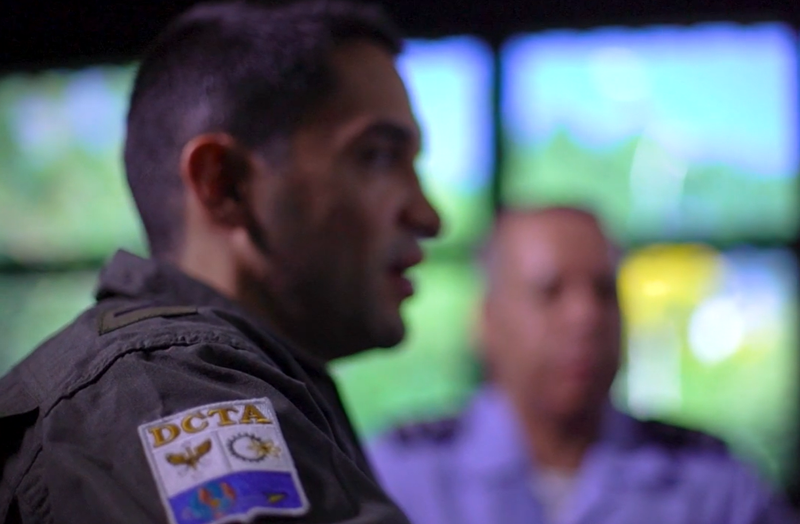
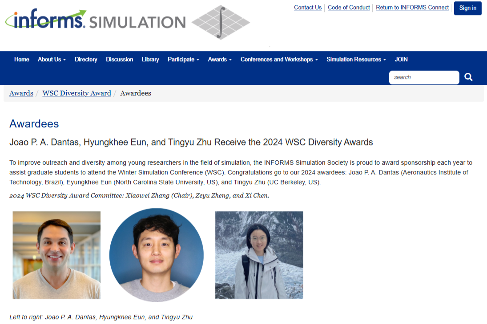
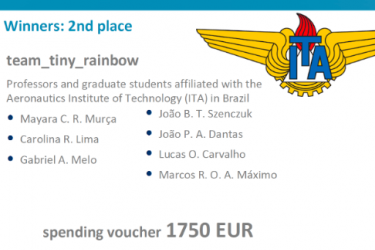
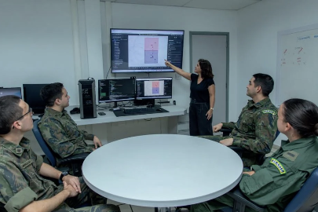
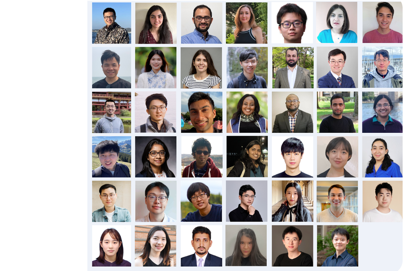
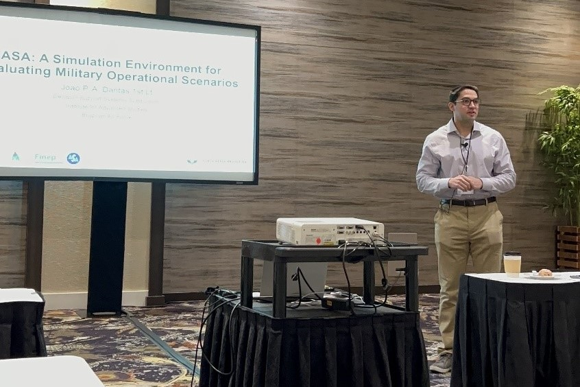
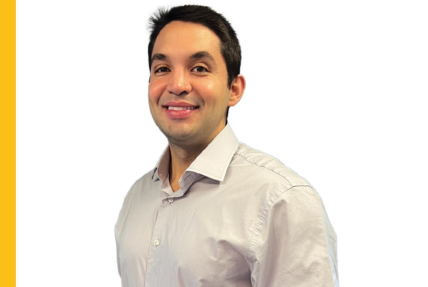
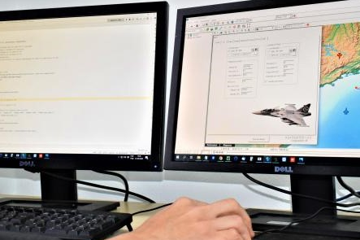
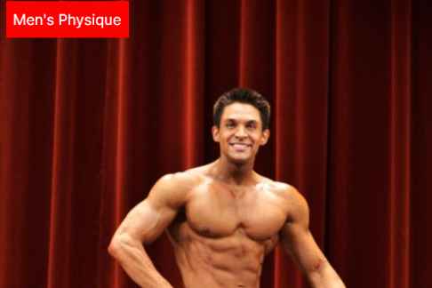

Media

Pesquisador do IEAv conquista primeiro lugar no concurso de dissertações e
teses do 10º Seminário dos Programas de Pós-Graduação do Ministério da Defesa
Institute for Advanced Studies (IEAv) • January 2025

O Céu Não é o Limite – A História do Marechal Montenegro
Globo TV • March 2025

Joao P. A. Dantas Receive the 2024 WSC Diversity Awards
Informs Simulation Society • December 2024

Equipe do ITA é premiada em competição internacional de Ciência de Dados na
Área de Aviação
Aeronautics Institute of Technology (ITA) • November 2024

ASA — Impulsionando a Inovação no Setor Aeroespacial
Aerovisão Magazine (Official FAB Publication) • September
2024

Introducing the 2024 MLCommons Rising Stars
MLCommons • June 2024

IEAv participa de conferência internacional de computação nos EUA
Department of Aerospace Science and Technology (DCTA) • September
2022

Joao Dantas foi um dos contemplados no Programa Líderes Estudar 2022
Fundação Estudar • August 2022

DCTA desenvolve protótipo de ambiente de simulação de cenários operacionais
Brazilian Air Force (FAB) • September 2020

2015 NPC Northeast Summer Classic – Joao Dantas (2nd Place)
NPC News Online • July 2015